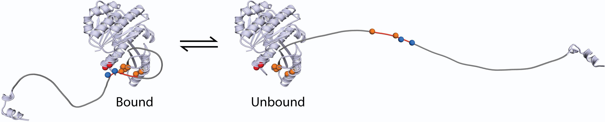
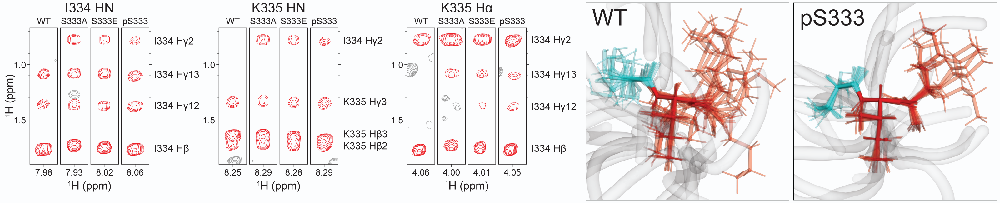

Structural Biochemistry
FtsZ tail-core binding
2024–2025Mapping the tail-core interface, and finding a phospho-switch.
FtsZ's tail carries a phosphorylation site, and mutating it alters cell size — but the mechanism was unknown. I combined AlphaFold, NMR, and ITC to show that: (1) the disordered tail folds back onto FtsZ's globular core, (2) the tail binds the core's polymerization surface, (3) the phospho-site sits at the center of the tail's binding region, and (4) phosphorylation structurally disrupts the tail's binding region.

Predicting IDR binding modes from thousands of AlphaFold models.
If you fold FtsZ, AlphaFold predicts its disordered tail dangles freely from the core. But if you co-fold the tail and core as separate chains, AlphaFold-Multimer docks them together. Was this real, or a handful of lucky runs? To find out, I co-folded them 1,000 times, then reduced each model to a contact map and clustered them. This revealed a tight set of consensus binding modes and a long tail of noise. I selected mutation targets from the consistently predicted contact residues, and then used NMR and ITC to confirm the predicted interface at the bench.
Quantitative 2D NMR analysis
2025Quantitative analysis of 2D NMR spectra.
Protein NMR spectra carry rich structural information, but quantitative comparison across samples requires careful and consistent processing. I built a tool to phase spectra automatically, assigned peaks to residues, and devised a normalization scheme that made 2D HSQC and NOESY signals comparable across a phospho-mutant allelic series of the FtsZ tail. This showed phosphorylation compacts the tail's central S333-I334-K335 binding motif. I then used the quantified NOE restraints to determine conformational ensembles with ARIA, showing this compaction tightens the sidechain envelope.

Kinase phylogenetics
2025Phylogenetic analysis of candidate FtsZ kinases.
B. subtilis was thought to carry three Ser/Thr kinases. I scanned its proteome for kinase domains and turned up a fourth — YrzF, never previously flagged. To work out which of the four phosphorylates FtsZ, I combined active-site motif analysis, AlphaFold structural comparison, and phylogenetics to narrow the field to one strong candidate: PrkC. I then confirmed it via a knockout experiment.
Protein Biochemistry
2023–2025Purification and in vitro assays.
Recombinant protein purification and in vitro polymerization assays.
Microscopy & Cell Biology
Live-cell fluorescence microscopy
2017–2024Designed and ran all experiments and analyses.
I ran all fluorescence microscopy experiments for my PhD end-to-end — including widefield, TIRF, and spinning-disk confocal. I optimized culture conditions, sample mounting, and acquisition parameters. I designed a custom filter cube for FM 5-95, a membrane dye whose unusually large Stokes shift makes standard cubes unsuitable. For long time-lapses of living cells, I managed the photon budget (laser power, exposure, interval), balancing SNR and temporal resolution against photobleaching and phototoxicity. Because my phenotype was subtle, much of the real work was tracking down and removing sources of variance in my system — population heterogeneity, media composition, downshift adaptation — to resolve the true effect size.
MeshCell
2020–2021Automated bacterial morphometry.
A computational geometry library for cell morphometry, tailored for bacterial cells growing in connected chains. Starting from cell masks, MeshCell extracts boundaries via marching squares and refines them against the membrane signal with active contours. It then builds a Voronoi skeleton of the whole chain, traces its longest interior path as a shared midline, and bisects that midline at cell junctions to recover individual cell lengths. I hand-wrote the core algorithms in vectorized NumPy. Co-developed with Shicong Xie.
Measuring cell size in bacterial chains
2020–2024From raw images to population statistics.
An end-to-end pipeline for turning ND2 stacks into cell-length distributions. Flat-field correction to remove illumination artifacts, segmentation via Omnipose, mask curation in Napari, per-cell geometry via MeshCell, and population-level statistical analysis. Parallelized on SLURM to scale to tens of thousands of cells.
Treadmilling velocity from TIRF time-lapse.
A TIRF time-lapse pipeline for single-particle velocity: particle tracking via Trackmate, trajectory extraction, and velocity estimation from the directed regime of the MSD.
Constriction dynamics from confocal time-lapse.
A spinning-disk confocal time-lapse pipeline: flat-field correction, frame registration, ring detection via TrackMate, FWHM-based orientation finding to locate constriction planes, and kymograph analysis to extract constriction start and end times.
Molecular Biology
2016–2025Genetic engineering and cloning.
Strain construction by scarless genome editing. Designed and built multi-fragment markerless allelic replacements.
Genomics
Integrative genomic analysis
2013–2016Analyzed ~10TB of genomics data for 20+ projects.
Contributed genomics analyses to 13 publications across stem-cell biology, epigenetics, hematopoiesis, and immunogenetics, working with bench scientists across many labs. Integrated RNA-seq, ChIP-seq, ATAC-seq, and bisulfite-seq data — from demultiplexing and QC, to alignment and quantification, to whatever downstream analysis each question required (differential expression, differential binding, peak-to-gene mapping). Designed and ran analyses, produced tables and figure panels for publication, and handled SRA/GEO submissions. Analyzed ~10TB of data for 20+ projects.
Broad GDAC Firehose
2012–2013Maintained production cancer genomics pipelines.
Maintained and extended the GDAC Firehose pipeline, a production platform processing tens of thousands of samples across dozens of cancer types. Triaged failures, diagnosed throughput bottlenecks, and rewrote memory-bound R as streaming Python. After tracing a failure to an undocumented 2 GB archive-size limit in Python's zipfile module, I contributed an upstream fix to CPython 3.4 (issues #17189, #17201).
PyLSF
2013Automating job management.
Wrote a Python C extension wrapping the IBM LSF API for automated job monitoring and queue management on Harvard's HPC cluster.
Real-time Signal Processing
isi-digital-backend
2010–2011A 138 Gbps FX correlator on three FPGAs.
Built an FX correlator for the Infrared Spatial Interferometer at Mount Wilson Observatory: three synchronized Xilinx Virtex-5 FPGAs processing 138 Gbps in real time, channelizing 2.88 GHz of bandwidth into 64 spectral channels. Hitting that rate meant clocking nearly twice as fast as any prior CASPER design (200 → 360 MHz), which I achieved by mapping the core arithmetic onto DSP48E primitives and developing a BRAM floorplanning methodology (CASPER Memo #42). Delivered the system end-to-end: FPGA gateware, PowerPC firmware, and a Python control layer streaming reduced data to disk in FITS format. The instrument resolved individual molecular signatures in Betelgeuse's atmosphere. (Space Sciences Laboratory, Townes lab; Wishnow et al., SPIE 2010)
gpu-xengine
2026Porting the ISI correlator's X-engine to GPU.
Ported the ISI correlator's cross-correlation engine from FPGA to CUDA. A naive port ran 30% slower; profiling revealed the workload was memory-bound, so I restructured data movement (memory pinning and coalescing) and ended up with 50% higher throughput than the original FPGA version.
xgb_recv
2008A 10 GbE receiver adopted by the Square Kilometre Array.
A multithreaded 10 GbE UDP receiver in C with a synchronized ring buffer for high-speed data capture. Its core architecture was adopted into PySPEAD, the data-transport layer for the Square Kilometre Array.
CASPER contributions
2008–201150+ commits to an open-source radio-astronomy FPGA toolkit.
Refactored and extended DSP library blocks in CASPER's open-source FPGA toolkit. Validating changes on hardware with injected test tones. Contributed 50+ commits and a floorplanning methodology memo (CASPER Memo #42). Also did full chassis integration for a spectrometer: a CAD front panel laser-cut from acrylic, with the FPGA board and RF splitters mounted and wired into a 4U rackmount enclosure, deployed at Arecibo Observatory.
Instrumentation & Firmware
Helium dilution fridge control system
2004–2005Cooling a telescope detector to 250 mK.
Wrote a C++ control system for a helium dilution fridge cooling a millimeter-wave telescope detector to 250 millikelvin. Sequenced the multi-stage cooldown and then held temperature through closed-loop feedback, interfacing with ADC and GPIO boards via Comedi device drivers on Linux. Deployed in the Atacama Desert. (UC Berkeley, Holzapfel Lab)
Quantum ion-trap pulse sequencer
2005Shuttling glowing particles around a planar trap.
Built an instrument to programmatically shuttle charged microspheres around a planar Paul trap. On the software side: I designed a compact instruction set for precisely timed voltage sequences, wrote a "pulse script" interpreter in ~1,000 lines of Scenix microcontroller assembly, and built a Python client to drive it. On the hardware side: I salvaged a NIM enclosure, mounted and wired the microcontroller and buffer electronics, designed a front panel in CAD, and cut it from aluminum stock on a waterjet. It was used to demonstrate, for the first time in a planar trap, the three movement primitives a scalable ion-trap quantum computer requires. (MIT, Chuang Lab; Phys. Rev. A 2006)
Networking & Sysadmin
House network manager
2003–2006Full-stack network management.
Managed the network in a 125-person house in the Berkeley Student Co-ops for three years. Pulled, crimped, and punched down cables; built RAID servers; maintained switches; managed Apache/MySQL/DNS servers; detected and isolated infected hosts; tuned iptables firewall and QoS rules on a load-balancing router built from a scavenged 486 running Debian GNU/Linux.
UC Berkeley Clustered Computing
2006Unix sysadmin for campus HPC clusters.
Unix systems administration for UC Berkeley's high-performance computing cluster (Millennium group). Maintained server hardware; managed job schedulers; handled support tickets.
JamLink
2007Real-time jam sessions over the internet.
Wrote network software for the alpha prototype of JamLink, a device for low-latency remote musical collaboration. Designed the binary protocol (packet format, session negotiation, master election) and built a multithreaded connection manager in Java over raw TCP sockets. (MusicianLink)
Miscellaneous
Bacterial phospho-site prediction
2026When PLM embeddings replace feature engineering.
Modern protein language models have quietly absorbed much of the feature engineering that specialized predictors are still built around. I trained a single-layer MLP on ESM-2 embeddings and matched the performance of a published ten-feature ensemble. In the process, I identified train-test leakage that had inflated its benchmark.
jscreensaver.net
2026JavaScript port of classic Unix screensavers.
JavaScript port of generative artwork from XScreenSaver (Jamie Zawinski & contributors). 150+ Unix/X11 screenhacks reimplemented from the original C and OpenGL. Minimalist full-viewport UI with keyboard navigation and mobile support. [source] (JavaScript, Canvas 2D, WebGL/GLSL, three.js)
discourse-analysis
2026Agentic RAG over ~500k tweets.
A search engine over a Twitter corpus (~500k posts) unifying full-text, fuzzy, and semantic search. Runs image OCR (Tesseract), machine translation (NLLB-200), and embedding (Qwen) on-device at zero cloud cost. Retrieves posts and reconstructs their context (threads, replies, quotes). Exposes an agentic tool interface (MCP) tailored to how an LLM explores a corpus.
claude-conversations
2026An offline search engine for your claude.ai archive.
A local browser and search engine over an exported claude.ai conversation archive. Useful for anyone who wants their chats offline and searchable. Three search modes: keyword (Postgres full-text), fuzzy (trigram), and semantic (local Qwen3 embeddings + pgvector), with a clean threaded reading view.
PlaceTrace
2025Your Google location history, mapped and queryable.
A personal location-history explorer: imports Google Timeline data into PostGIS, with local reverse geocoding against OpenStreetMap boundaries, trip detection, and an interactive map UI for spatial and temporal queries.